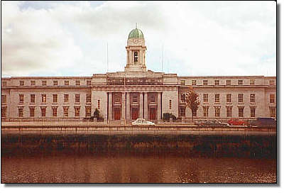
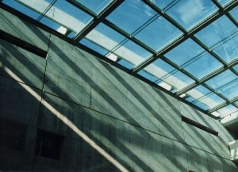
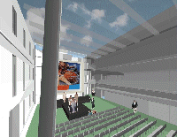

| Home | What To Do | University College Cork | Cork City Gaol | Cork City Hall | Fota Wildlife Park |
CORK CITY Hall


The City Hall Anglesea Street Cork City is the headquarters of Cork Corporation and city administration. The fine concert hall in the building is the venue for concerts, festivals and functions.
The City Hall was opened in 1936 and replaced the previous structure that was burned down on 11 September 1920. It was designed by Architects Jones and Kelly and the six limestone Tuscan pillars and copper-domed clock tower are particularly impressive by night.
THE MILLENNIUM HALL

The Millennium Hall was officially opened by the Right Honourable The Lord Mayor of Cork on 28th June 2001.
The City Hall is built on the site of the Old City Hall. The foundation stone was laid in 1932 and the building was formally opened in September 1936. Since then no major additions or alterations have been made to the building. The construction of the New Hall in the East Courtyard of the City Hall will provide a multi-purpose space which will allow the concert hall to reach its full potential as arguably the best venue in the country for musical performances. This is achieved by the provision of dressing room facilities, orchestral rehearsal space and a dispense bar.
The New Hall will increase exhibition space by a third, provide sufficient dining space for a thousand person conference in the Concert Hall and can be used as a reception space for a 1,500 person dining function held in the Concert Hall/Exhibition Hall.
In addition, the New Hall will provide the following stand-alone facilities:
A performance venue for up to 340 people, acoustically suitable for speech and music.
An outside-broadcast television studio suitable for programmes such as "Questions and Answers" and "PrimeTime."
A suitable reception space for formal Civic Receptions in conjunction with the first floor reception space.
Create a space for exhibition which can act independently of the other halls with accommodation for 50 stall holders and 400 members of the public.

Included with the building of the New Hall, the following will be provided:
Kitchen facility to service Concert Hall, New Hall, Existing Hall and new first floor reception area.
A New East Foyer with ticket and cloak facilities with a new stepped and ramped access to facilitate the disabled.
Storage for individual and raked telescopic seating.
Similar foyer facilities and access are being provided at the Terence McSwiney Quay entrance to the Concert Hall. Besides the most significant improvement being proposed for the Concert Hall, namely the provision of the New Hall, other significant improvements are: increased capacity to 1,250 persons seated for a concert or a conference, new seating to ground floor, upgrade of stage acoustics and lighting, vastly improved toilet facilities, enhanced chair storage facilities. The Exhibition Hall is to be upgraded to improve comfort levels in respect of heating and ventilation and will be redecorated. The new kitchen is conveniently located between the New Hall, the Concert Hall and the existing hall. The Anglesea Street entrance, which will retain its role solely as Civic Entrance, is to be upgraded to include a reception foyer with ramped access for the disabled.